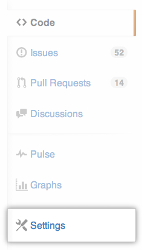
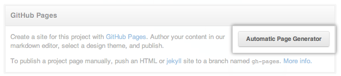
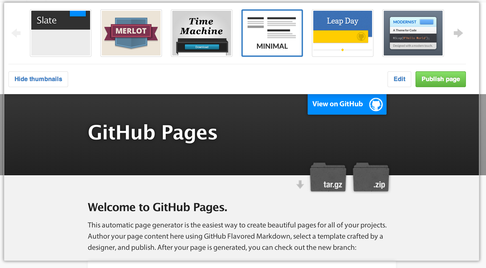
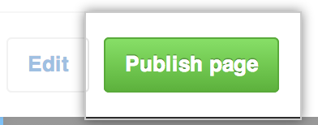

You can use GitHub's Automatic Page Generator to quickly create a website for a project, user, or organization.
User and Organization Pages
To generate User and Organization Pages sites, you'll need to create a repository named username.github.io or orgname.github.io. The username or organization name must be your own or GitHub Pages sites will not build. The automatic page generator is accessible via the repository's Settings page. You can read more about User and Organization Pages here.
Warning: Your GitHub Pages site will be publicly available on the internet, even if its repository is private. If you have sensitive data in your Page repository, you may want to remove it before publishing.
Tip: If you would like to use Pages on GitHub Enterprise, note that:
- you must replace all instances of
github.ioin this article with your Enterprise hostname - your Pages sites will be served at a subdirectory (e.g.
http(s)://[hostname]/pages/[user or organization name]) instead of a subdomain (e.g.http://[user or organization name].github.io)
Project Pages
You can use the automatic page generator to publish GitHub Pages sites for any project repository. However, please note that GitHub Pages sites are always public, even for private repositories.
Warning: You must create the repository with the naming convention described above or you will not be able to publish your GitHub Pages site.
The Automatic Page Generator
- Go to the repository's settings page. 
- Click the Automatic Page Generator button. 
- Author your content in the Markdown editor.
- Click the Continue To Layouts button
- Preview your content in our themes. 
- When you find a theme that you like, click Publish page. 
After your GitHub Pages site is generated, you can get a local copy of its HTML code. If you generated a Project Pages site, fetch and check out the new branch:
cd repository git fetch origin # remote: Counting objects: 92, done. # remote: Compressing objects: 100% (63/63), done. # remote: Total 68 (delta 41), reused 0 (delta 0) # Unpacking objects: 100% (68/68), done. # From https://github.com/user/repo.git # * [new branch] gh-pages -> origin/gh-pages git checkout gh-pages # Branch gh-pages set up to track remote branch gh-pages from origin. # Switched to a new branch 'gh-pages'
If you generated a User Pages site, the code lives in the master branch instead of the gh-pages branch, so just check out master and then pull!
cd repository git checkout master # Switched to branch 'master' git pull origin master # remote: Counting objects: 92, done. # remote: Compressing objects: 100% (63/63), done. # remote: Total 68 (delta 41), reused 0 (delta 0) # Receiving objects: 100% (424/424), 329.32 KiB | 178 KiB/s, done. # Resolving deltas: 100% (68/68), done. # From https://github.com/user/repo.git # * branch master -> FETCH_HEAD # Updating abc1234..def5678 # Fast-forward # index.html | 265 ++++ # ... # 98 files changed, 18123 insertions(+), 1 deletion(-) # create mode 100644 index.html # ...